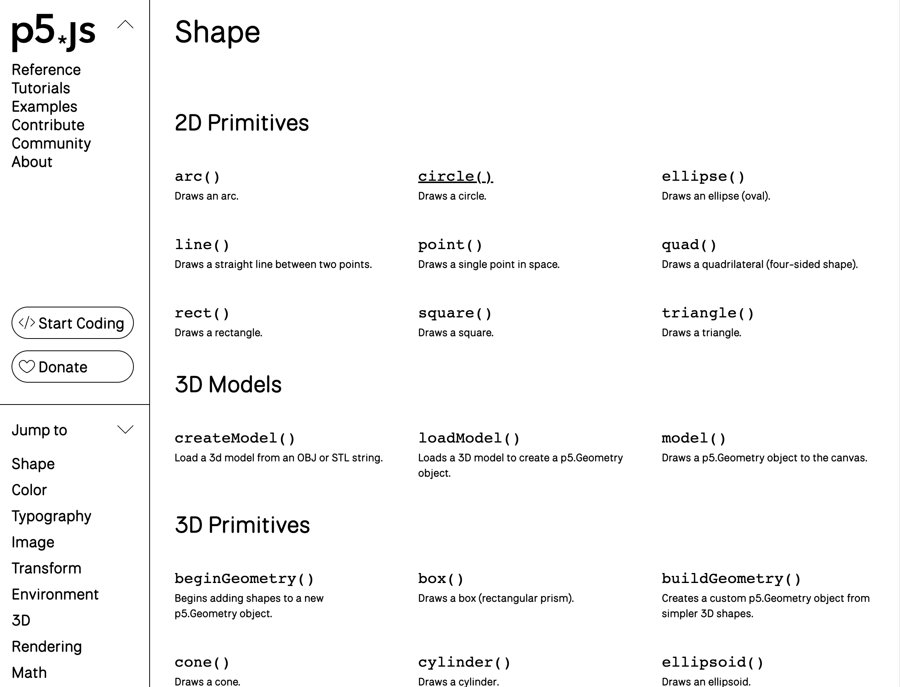
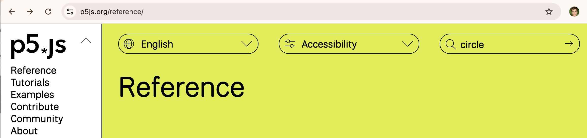
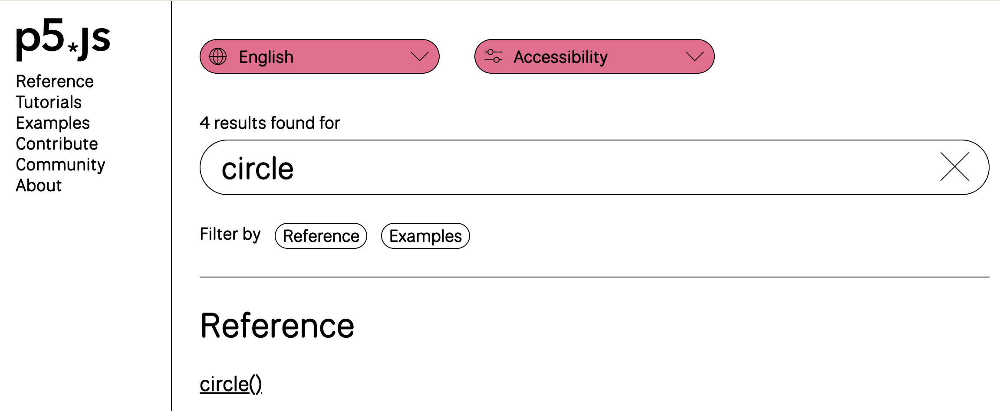
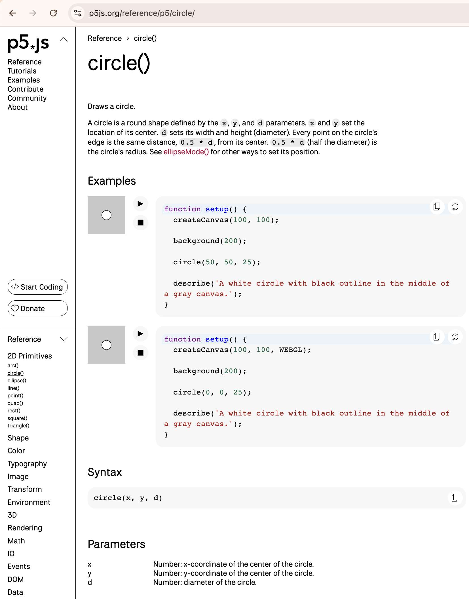

Indhold
Programmeringssprog og framework (editor):
Vi programmerer i programmeringssproget javascript, som er et af de mest populære programmeringssprog 2025. Herudover benytter vi javascript biblioteket p5js (https://p5js.org) som har nogle indbyggede funktioner der gør det nemt at lave grafisk flotte, sjove og kreative programmer. For at gøre det nemmere at skrive og afvikle vores programmer bruger vi online editoren her: https://editor.p5js.org
Hvad er et program
Når man programmerer, så skriver man noget kode som computeren kan forstå og omsætte til noget grafisk som man kan se.
Hvad er vigtigt med hensyn til at sikre god læring
- Start med at lære det grundlæggende.
- Få erfaring i at lave noget større ved f.eks. at løse Zelda, HeroMan og GrandPrix opgaverne.
- Vær eksperimenterende og husk at vise det du laver til andre.
- Find selv på et projekt f.eks. en digital version af et bib-bib spil og find herefter ud af hvordan du laver det
- Giv det du laver gode navne så du kan finde det igen.
- Hav det sjovt
Held og lykke på rejsen med at lære at kode og husk at slippe fantasien løs; O)
Eksempler på hvad du kan lære at lave når du bliver god til det grundlæggende
Eksempel 1: HeroMan: Spil som du kan lære at lave når du bliver god til den grundlæggende (code)
Eksempel 2: GranPrix: Et spil hvor vi genopliver et bib-bib spil fra 1980erne (code)
Eksempel 3 (meget avanceret): SpaceStratego: Et online multiplayer space shooter med sol system som minimap og hvor man kan warp'e mellem planeter (code)
Hvad skal jeg gøre for at komme i gang
Note: Her er et link til den officieller p5js getting started guide: https://p5js.org/tutorials/get-started/
Step 1: Åben: https://editor.p5js.org/ og tryk på “sign up” øverst i højre hjørne.
Step 2: Skriv følgende kode ind for at lave dit første program. Tryk på den gule play knap for at afvikle programmet.

Step 3: Hvis du gerne vil have farverne som vist ovenfor skal vælge skal du trykke på det gule tandhjul til øverst til højre og vælge General settings → High Contrast

Step 4: Det er vigtigt at du kender og kan benytte funktionaliteten i editoren. Prøv derfor nedenstående funktionalitet af:
-
Man kan omdøbe et program. I eksemplet ovenfor har jeg omdøbt program navnet til “Hello world”.
-
Hvis man sætter flueben i Auto-refresh så behøver man ikke at trykke play hver gang man vil afvikle programmet
-
I “File” menuen kan man vælge “Duplicate” for at tage en kopi af sit program. Hvis man vælger “Share” kan man få et link så man kan sende sin kode til andre (ved at kopiere browserens url f.eks. https://editor.p5js.org/JensValdez/sketches/WChmCr6qr). Hvis man vælger “Share” kan man også få et link så andre kan prøve ens program i full screen mode f.eks. hvis man har lavet et flot Hello world program (f.eks. https://editor.p5js.org/JensValdez/full/WChmCr6qr).

-
“Edit” menuen har en rigtig brugbar funktion der hedder “Tidy Code” som sørge of at koden står pænt. Dette er en stor hjælp til at sikre at man har skrevet koden korrekt

-
Når man laver et program, så hedder det en Sketch. I menuen øverst til højre kan man finde de programmer man tidlige har lavet og organisere dem i Collections. Man får hurtig lavet virkelig mange programmer og muligvis forskellige backup versioner af disse. Det hjælper derfor rigtig meget at navngive fornuftigt og organisere ine Sketches i Collections.

Step 5: Man kan finde en oversigt over dokumentationen for alle de indbyggede p5js funktioner her: https://p5js.org/reference/
Hvorefter man kommer ind på denne side. Hvis man f.eks. gerne finde ud af hvordan man tegner en cirkel, så kan man i venstre side vælge Shapes -> 2D Primitives -> Circle

Alternativt kan man søge efter circle øverst til højre.


Her er documentationen for en cirkel:

På denne side er en forklaring af den funktion man har søgt på (i vores tilfælde en cirkel), et eksempel (hvor man kan vælge edit og prøve funktionen af), syntaksen for hvordan man bruger funktionen (som der ses ovenfor tager circle funktionen tre argumenter) samt en forklaring af hvad argumenterne er (i vores tilfælde er det x koordinat, y koordinat samt diameteren)